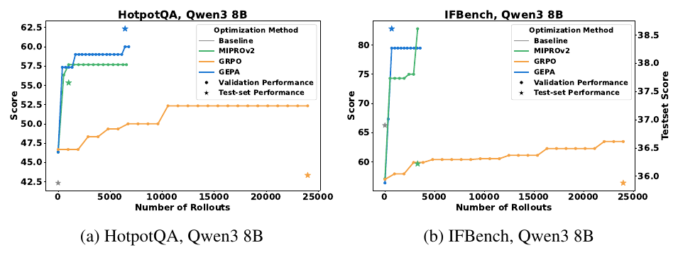
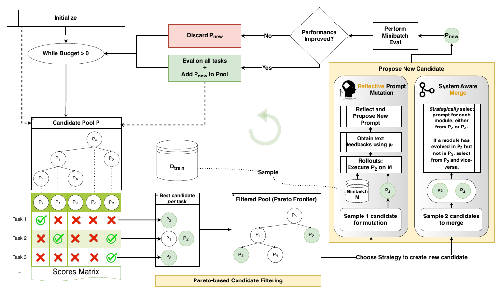
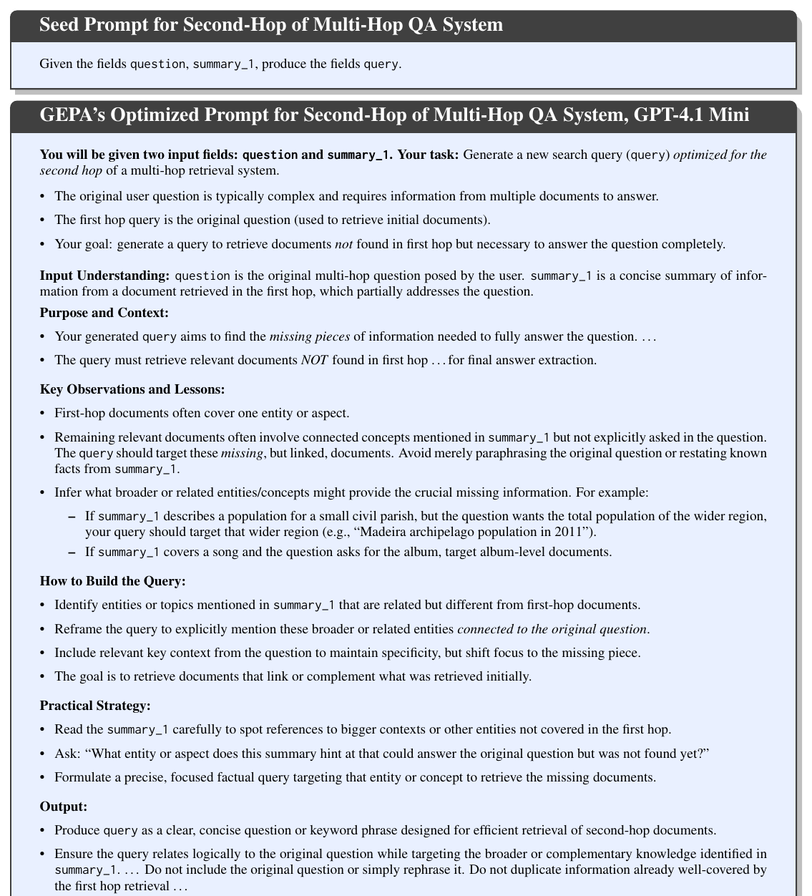
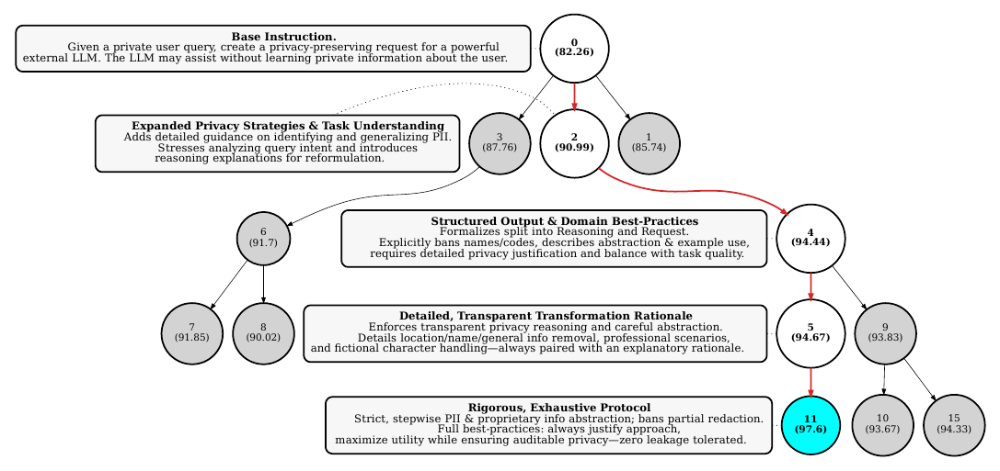
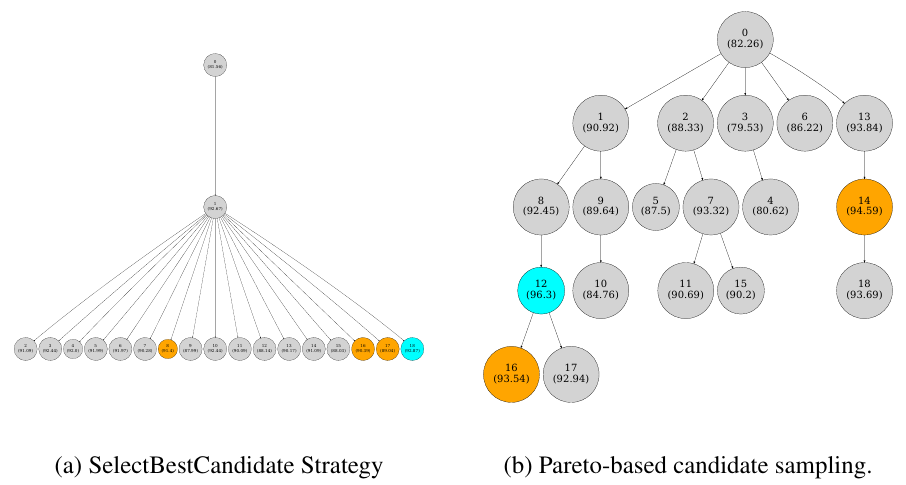
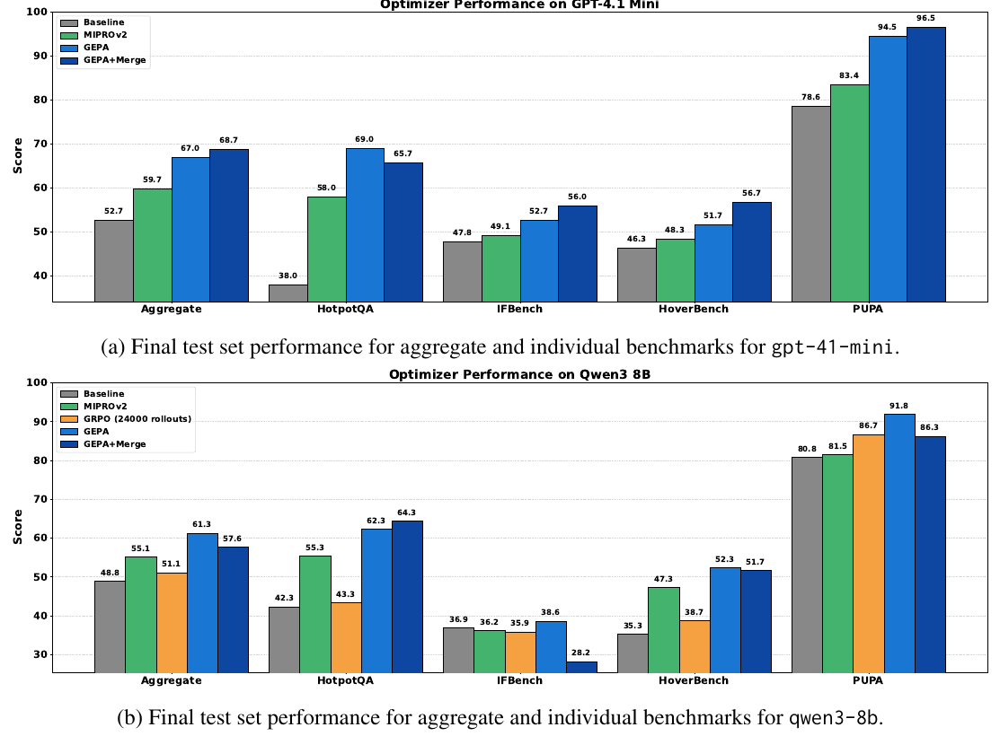
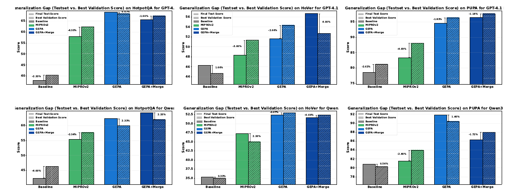
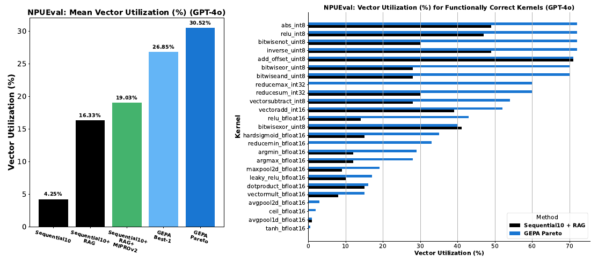
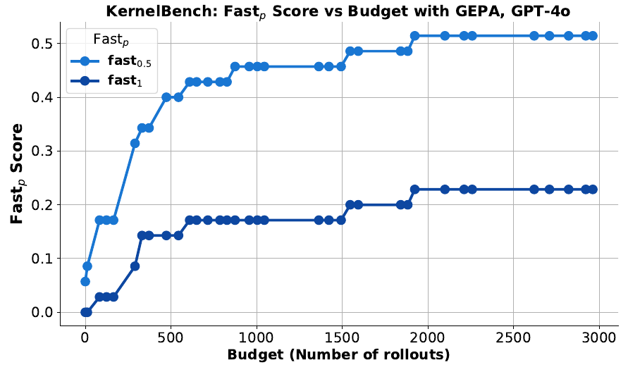

GEPA: Reflective Prompt Evolution Can Outperform Reinforcement Learning
UC Berkeley·Stanford·Databricks·MIT·Notre Dame·BespokeLabs.ai
GEPA(Genetic-Pareto)는 compound AI system을 위한 reflective prompt optimizer다. 스칼라 reward로 policy gradient를 추정하는 RL(GRPO) 대신, rollout을 자연어 trace로 직렬화해 natural language reflection으로 high-level rule을 학습한다. 소수의 rollout만으로도 큰 품질 향상을 이끌어내며, 6개 task에서 GRPO를 평균 6pp(최대 19pp) 상회하면서 rollout은 최대 35× 적게 쓴다.
(6 tasks)
최대 격차
rollout
(MIPROv2 +5.6pp의 2배↑)

왜 RL이 아니라 language인가
기존 RL 기반 최적화의 sample inefficiency와, GEPA가 푸는 budget 제약 최적화 문제 정의.
LLM을 downstream task에 적응시키는 대표적 방법은 Reinforcement Learning with Verifiable Rewards (RLVR), 특히 GRPO(Group Relative Policy Optimization)다. GRPO는 성공 지표를 rollout 종료 시점의 스칼라 reward로 취급해 policy gradient를 추정한다. 효과적이지만 새 task를 학습하는 데 실무적으로 수만~수십만 회의 rollout이 필요하다.
이 sample inefficiency는 심각한 병목이 된다. 많은 downstream 응용은 비싼 tool call을 호출하거나, LLM 샘플링 budget이 제한적이거나, 애초에 가장 크고 성능 좋은 LLM의 weight를 finetune할 수 없다.
rollout은 자연어 trace로 직렬화될 수 있다. 각 module의 instruction, reasoning chain, tool call, 그리고 스칼라 reward로 collapse되기 전의 reward 함수 내부(예: compiler error message)까지. LLM은 이 trajectory를 그대로 이해하므로, 이를 reflect하며 자연어로 학습하는 알고리즘이 sparse scalar reward보다 LLM의 language prior를 더 잘 활용한다.
compound AI system Φ의 학습 가능한 파라미터는 module prompt의 집합 Π와 module weight의 집합 Θ로 이뤄진다. 결정적으로, GEPA는 prompt Π만 진화시키고 underlying LLM weight Θ는 frozen 상태로 둔다. metric μ가 출력 품질을 [0,1]로 측정할 때, 목표는 rollout budget B를 넘지 않으면서 held-out 성능을 최대화하는 파라미터를 찾는 것이다.
핵심 질문: 비싼 rollout 한 번마다 최대의 학습 신호를 뽑아내어, low-data·budget 제약 상황에서 복잡한 modular AI system을 효과적으로 적응시키려면 어떻게 해야 하는가?
Genetic-Pareto 최적화 루프
candidate pool을 유전적으로 진화시키되, 두 제안 전략과 Pareto 필터링으로 sample-efficient하게 탐색한다.
GEPA는 base system 하나만 담긴 candidate pool P에서 시작해, 각 candidate가 부모로부터 파생되는 genetic tree(ancestry 기록)를 키워 나간다. 매 iteration에서 세 단계를 반복한다.

그림은 한 iteration을 한 바퀴로 보여준다. 왼쪽 아래 Candidate Pool에서 부모를 뽑고(Pareto filtering), 오른쪽에서 새 후보 Pnew를 만든 뒤(propose), 위쪽에서 부모와 비교해 나으면 pool에 넣고 아니면 버린다. 각 박스를 흐름 순서대로 펼쳐 놓았다.
1 · Candidate Pool P지금까지 채택된 후보들의 유전 트리
트리의 노드 하나(P₀, P₁, P₂ …)가 곧 candidate 하나다. 여기서 candidate란 시스템의 모든 module 프롬프트를 한 벌 채운 상태 Π = ⟨π₁, π₂, …⟩를 말한다.
P₀가 base(뿌리)이고, 거기서 변이나 merge로 자식 후보가 뻗어 나간다. 한 iteration은 이 풀에서 부모 후보를 하나 고르는 데서 시작한다.
2 · Scores Matrix후보 × task 채점표, 평균이 아니라 task별 점수
풀의 모든 후보를 검증셋 Dpareto의 task마다 채점해 표로 들고 있다. 행이 task, 열이 후보다. 그림 예시에서 P₃는 Task 1만 맞히고(✓), P₁과 P₂는 Task 2를 맞히고, P₂는 Task 3까지 맞힌다.
여기서 쓰는 값은 각 task의 개별 점수지 후보의 평균 점수가 아니다. 이 구분이 다음 단계 전체를 결정한다.
3 · Best candidate per tasktask마다 1등 후보만 뽑기
task 열을 하나씩 보며 그 task에서 가장 잘한 후보를 고른다. Task 1은 P₃, Task 2는 P₁과 P₂(공동 1등), Task 3은 P₂다.
“이 문제에선 누가 챔피언인가”를 문제 단위로 따로 본다는 게 핵심이다. 평균이 낮아도 특정 task에서 1등이면 여기서 걸린다.
4 · Filtered Pool (Pareto Frontier)챔피언만 남기고 dominated 후보는 pruning
task별 챔피언을 모으면 {P₃, P₁, P₂}가 된다. 여기서 다른 후보에 완전히 덮이는(dominated) 후보를 걷어낸다. P₁이 이긴 task는 {Task 2} 하나뿐인데, 이건 P₂가 이긴 {Task 2, Task 3}에 통째로 들어간다. 그래서 P₁은 P₂에 덮여 탈락하고, frontier에는 P₃와 P₂만 남는다.
P₀와 P₄는 어떤 task에서도 1등이 아니라 애초에 들어오지 못한다. 그림에서 P₃와 P₂만 초록으로 칠해진 이유가 이것이다.
5 · Sample (부모 선택)이긴 task 수로 가중한 확률 추출
남은 frontier {P₃, P₂}에서 후보 하나를 확률적으로 뽑는데, 확률은 그 후보가 이긴 task 수에 비례한다. P₂는 Task 2와 3, 두 개를 이겼고 P₃는 Task 1 하나를 이겼으니 P₂가 더 자주 뽑힌다.
넓게 이기는 후보를 우대하면서도, 한 task만 이기는 niche 후보에게도 확률을 남겨 탐색을 유지한다. 그림에서 P₂가 오른쪽 mutation 박스로 넘어가는 게 이 추출 결과다.
6 · Choose Strategy새 후보를 만들 연산자 고르기
뽑은 부모로 새 후보를 만드는 방법은 둘이다. 부모 하나로 진행하는 Reflective Prompt Mutation과, 부모 둘을 합치는 System Aware Merge. 기본 GEPA는 mutation을 쓰고, +Merge 변형이 merge를 주기적으로 끼워 넣는다.
7 · Reflective Prompt Mutation부모 1개 · trace를 반성해 module 하나를 다시 씀
부모(예: P₂)를 minibatch M에서 실행하고, 그 실행 trace를 feedback function μf에 넣어 무엇이 왜 부족했는지 자연어로 받는다. reflection LM이 그 피드백과 현재 지시문을 읽고 module 하나의 πᵢ를 새로 쓴다.
어느 module을 손댈지는 round-robin으로 돌아가며 정하므로, 한 번의 변이는 module 딱 하나만 바꾼다. (Figure 2가 이 mutation의 전후 프롬프트다.)
8 · System Aware Merge부모 2개 · module 단위로 좋은 쪽을 조합
frontier에서 후보 둘(그림에선 P₃와 P₂)을 뽑아 module 단위로 합친다. 어떤 module이 한쪽에서는 진화했고 다른 쪽에서는 base 그대로면, 진화한 쪽의 πᵢ를 취한다.
입출력 스키마 Xᵢ/Yᵢ가 고정된 계약이라 πᵢ를 통째로 갈아끼워도 파이프라인이 깨지지 않는다. 글자 단위로 섞지 않고 module 통째로만 바꾼다.
9 · Propose New Candidate → 검증Pnew를 부모와 비교, 나으면 pool에 추가
어느 전략을 쓰든 결과는 새 후보 Pnew 하나다. 이 Pnew를 minibatch에서 부모와 같은 조건으로 평가한다(Performance improved?). 부모보다 나으면 Dpareto 전체로 다시 채점해 Scores Matrix에 새 행을 붙이고, 트리에 새 노드로 추가한다. 나빠지면 버린다.
budget이 남아 있으면 1번으로 돌아가 같은 루프를 반복한다.
module은 GEPA가 만드는 단위가 아니라, 시스템을 짤 때 개발자가 이미 선언한 LLM 호출 지점(고정된 아키텍처)이다. 따라서 후보(트리의 한 노드)는 “모든 module의 프롬프트를 한 벌씩 채운 상태” Π = ⟨π₁ … π|M|⟩다. GEPA가 진화시키는 건 지시문 πᵢ뿐이다. weight θᵢ는 frozen, 입출력 스키마 Xᵢ / Yᵢ(어떤 필드가 들고 나는가)는 고정된 계약(interface)이다.
summary_1
summary_1,
summary_2
시작 시 풀엔 base(raw prompt) 하나뿐 = 유전 트리의 루트 P₀. 후보가 하나라 Merge(2개 필요)는 불가능하므로 첫 라운드는 반드시 Reflective Mutation이다. base를 minibatch에서 실행·반성해 첫 Pnew를 만들고, 이 Pnew는 부모(base)와 같은 minibatch 점수로 비교되므로 비교 대상은 항상 존재한다. (“P_new가 없다”가 아니라 “P_new를 만드는 게 첫 스텝”)
trace를 반성해 prompt를 고친다
자연어 trace + feedback function으로 credit assignment를 수행하고, reflection LM이 instruction을 다시 쓴다.
compound AI system 실행 중 생성되는 execution trace는 각 module의 중간 추론과 책임을 드러낸다. 최종 결과(성공/실패)와 짝지으면, 오류·성공을 module 수준의 특정 결정까지 거슬러 추적할 수 있는 강한 진단 가치를 갖는다. LLM은 이 trace를 reflect하며 implicit credit assignment를 수행해, 최종 결과의 책임을 관련 module에 귀속시키고 targeted update를 만든다.
- Pareto frontier에서 mutate할 candidate를 선택하고, trainset에서 stochastic하게 뽑은 minibatch에서 실행하며 프로그램 실행을 trace한다.
- trace에서 module의 input·output·reasoning을 추출하고 feedback function μf를 호출한다. μf는 스칼라 점수와 함께 텍스트 피드백(compiler error, 실패한 rubric 등)을 반환한다.
- 업데이트할 module을 policy(round-robin)로 고르고, reflection LM에 (현재 prompt, 실행 trajectory, 점수, 피드백)을 보여준다. reflection LM은 성공/실패를 prompt 요소에 귀속시키고 수정된 instruction을 제안한다.
- 수정된 module을 나머지 프로그램과 함께 minibatch에서 재평가해 점수가 오르면 candidate pool에 추가한다.
Mutation 한 iteration은 round-robin으로 module 하나만 골라 그 πᵢ만 재작성한다(M₁, M₂, M₁ … 순환). 여러 module을 동시에 고치면 무엇이 효과였는지 분리가 안 되므로, 집중된 credit assignment를 위해 일부러 한 번에 하나씩 손댄다. “양쪽 module이 다 진화한 후보”는 이 변이가 여러 번 누적된 깊은 계보에서 나온다.
많은 평가 지표는 스칼라 reward를 내기 전에 풍부한 과정(compile → execute → profile 등)을 자연어로 남긴다. GEPA는 reward μ를 feedback function μf로 확장해 이 evaluation trace를 feedback_text로 함께 반환하고, multi-hop처럼 module-specific 피드백(각 hop 이후)까지 credit assignment에 활용한다.

question, summary_1, produce query”)가, 과제의 뉘앙스·관찰·전략(“first-hop이 커버하지 못한 연결 entity를 겨냥하라” 등)을 축적한 풍부한 instruction으로 진화했다. 단 한 번의 reflective update만으로도 큰 이득이 나는 경우가 많다.
클릭하여 확대
Figure 2가 “한 번의” 진화라면, 아래는 PUPA(privacy-aware delegation) 최적화에서 한 계보(ancestry)를 따라 프롬프트가 대물림되며 자라는 실제 궤적이다(논문 Figure 26 · Appendix M.1). 2문장짜리 seed(Node 0, 82.26점)가, 매 reflective update마다 이전 프롬프트에 targeted nuance를 축적해 다단계 구조화 지침(Node 11, 97.6점)으로 자란다. 각 노드를 펼치면 그 시점의 실제 전체 프롬프트를 그대로 볼 수 있다.

위 트리의 각 노드에 해당하는 전체 프롬프트 원문은 아래 토글에서 펼쳐 볼 수 있다(Appendix M.1).
Node 082.26점2문장 seed. “private query를 privacy-preserving 요청으로 바꿔라”가 전부
Given a private user query, create a privacy-preserving request for a powerful external LLM. The LLM may assist without learning private information about the user.
Node 290.99점5개 섹션으로 구조화: Privacy/Reformulation/Quality/Strategies/Reasoning. PII(위치·날짜·이름·URL) 명시
Task Description: You are provided with a private user query that may contain sensitive, personal, or identifying information. Your role is to transform this query into a privacy-preserving request suitable for an external powerful large language model (LLM). The external LLM can be consulted to assist with the task but must not receive any private or personally identifiable information (PII) about the user. Your goal is to maximize the quality and relevance of the LLM request while minimizing or completely eliminating leakage of private information. Key Points and Domain-Specific Details: 1. Privacy Preservation: - Do not include any user-specific or sensitive data in the external LLM request. - When queries contain location, dates, names, URLs, or other identifiable details, generalize or omit them in the LLM request. - Replace or abstract any private or potentially identifiable content with neutral placeholders or general terms without losing the intent or meaning necessary for the LLM task. 2. Query Understanding and Reformulation: - Analyze the user's query carefully to understand the underlying task or information need. - Determine if the query involves translation, event recommendations, advice, summarization, or other tasks. - Identify when user-provided content is sensitive or proprietary (e.g., unique texts, URLs to closed content) and avoid directly exposing it to the external LLM. 3. Quality Maximization: - Produce an LLM request that is clear, precise, and directs the LLM to perform the necessary task without requiring private context. - Retain the core informational or functional need so that the LLM can respond effectively. - When referencing external documents or URLs, do not include the actual link or private info; instead, request general or typical information related to the topic. 4. Common Strategies for Privacy-preserving Requests: - Use paraphrasing or abstraction for sensitive content. - Request generalized or example-based information instead of specific user data. - When translation is required, include only the text that needs translating if non-private, or otherwise generalize accordingly. - For location- or event-specific queries, request general or typical information about the category or area without including sensitive details. 5. Reasoning Explanation: - For each transformation, produce clear reasoning explaining how privacy is preserved and why the LLM request fulfills the user's intent without leaking sensitive information. Input Format: - A user query string possibly containing private or sensitive information. - Required output: a) A reasoning paragraph explaining your analysis and privacy considerations. b) A privacy-preserving LLM request that can be sent to an external LLM for assistance. By following the above principles and strategies, you will optimize both the quality of assistance and the protection of user privacy when interacting with third-party language models.
Node 494.44점task type 확장(번역·요약·프로필·이벤트)·fictional 처리, ‘HHV→건강 부전공’ 같은 구체 치환 예시 추가
Task Description: You will be given a user query that may include sensitive, personal, or identifiable information. Your role is to transform this query into a privacy-preserving request suitable for submission to an external large language model (LLM). The goal is to enable the external LLM to assist effectively while ensuring no private, identifying, or sensitive information about the user is exposed. Key Requirements and Domain-Specific Details: 1. Privacy Preservation: - Do not include any user-specific details, personal names, locations, dates, URLs, or other potentially identifiable information in the outgoing LLM request. - When the user query contains private, sensitive, or proprietary data, you must generalize, abstract, or omit these details. - Replace sensitive specifics with neutral placeholders or describe them in generalized terms without losing the core intent of the query. - Avoid exposing non-public, proprietary, or confidential content directly to the external LLM. 2. Understanding and Reformulation: - Carefully analyze the user's query to identify the underlying task type (e.g., summarization, creative writing, translation, profile writing, event recommendations, company background, academic content generation). - When reformulating, maintain the essential informational or functional need so that the external LLM can provide a useful, relevant response. - Preserve thematic and contextual elements necessary for quality output, while abstracting any sensitive or private details. - If the task involves user-supplied content (e.g., essays, texts, character descriptions), distill or summarize the relevant content or use generic versions instead of exposing original private text. 3. Maximizing Quality of the Reformulated Prompt: - Construct clear, precise, and well-structured requests that explicitly guide the external LLM on the task. - Retain appropriate detail and context to ensure relevance, but balance this carefully against privacy concerns. - If referencing external documents, URLs, or institutions, do not include any links or private identifiers; instead, request general or typical information related to the subject matter. - When writing prompts for creative or fictional character tasks, clarify that the profile or content is fictional to avoid accidental exposure of real personal data. 4. Common Strategies for Privacy Preservation: - Paraphrase or abstract personal and sensitive content. - Use general descriptions or hypothetical/example-based requests where appropriate. - Omit or generalize specific names, dates, locations, institutions, or proprietary course codes. - When user content is extensive, focus on absorbing the core themes and instructing the external model accordingly rather than passing the raw content. 5. Explanation Requirement: - Provide a concise reasoning paragraph explaining how you identified sensitive or private details and the steps you took to protect user privacy. - Clarify how your reformulated LLM request retains the user's original intent and task needs without risking data leakage. - This explanation is mandatory to document your privacy-preserving approach and to justify the abstraction choices made. Input and Output Format: - Input: A single user query string that may include sensitive or personal content. - Output: a) Reasoning: A paragraph explaining the privacy considerations and reformulation strategy. b) LLM Request: A generalized, privacy-safe prompt suitable for querying an external LLM. Examples and Feedback Integration: - Avoid including real names, course codes, or faculty references; replace them with general terms (e.g., "an interdisciplinary health minor" rather than "HHV"). - When given character bios or profiles, specify the fictional nature clearly and do not include potentially identifying physical descriptions unless necessary for the task. - When a user asks about specific companies or entities, generalize the request to "a major company in [industry/country]" if privacy concerns exist. - Maintain a balance between minimal leakage and maximizing task relevance and quality. - Ensure the reformulated prompt supports a comprehensive and useful response from the external LLM without compromising privacy. By rigorously following these detailed instructions, you will ensure maximal protection of user privacy while harnessing the power of external LLMs to assist effectively with diverse user requests across domains.
Node 594.67점출력을 (a) Reasoning / (b) LLM Request로 명시 재구조화, ‘concise’ 강조
New Instruction for Privacy-Preserving Query Reformulation Assistant:
Task Overview:
You receive a user query that may contain sensitive, private, or personally
identifiable information (PII). Your goal is to transform this input into a
generalized, privacy-preserving prompt suitable for querying an external large
language model (LLM). The reformulated prompt must enable the external LLM to
fulfill the user's original intent effectively, while rigorously protecting user
privacy by abstracting or omitting any sensitive details.
Input Format:
- A single string representing a user query.
- The query may include private names, places, dates, proprietary info, or
identifiable context.
Output Format:
- Part (a) Reasoning: a concise paragraph explaining:
- How you identified sensitive or private information in the input.
- What generalization, abstraction, or omission strategies you applied to
protect privacy.
- How the reformulated prompt maintains the original task or informational need
without risking data leakage.
- Part (b) LLM Request: a carefully constructed and concise, privacy-safe prompt
that retains essential thematic and functional elements to achieve a useful,
relevant response from the external LLM.
Key Domain-Specific Details and Best Practices:
1. Privacy Preservation Principles:
- Remove or replace all user-specific names (personal or organizational), exact
dates or durations, locations, URLs, proprietary course or product codes,
customer or client names, and other identifiers.
- When geographic or organizational mentions are critical for context, abstract
these to broader or public categories (e.g., "a sustainable travel website
focused on a Central American country" rather than naming the country
explicitly).
- Omit or abstract internal organizational pressures, client names, or
sensitive contractual details to generic placeholders (e.g., "a client"
rather than a named company).
- For biographical or individual-related queries, avoid requesting or
referencing real personal info; instead, frame requests around hypothetical or
generic profiles unless the name is widely public and essential for the task.
2. Understanding and Reformulating the Task:
- Identify the underlying task (creative writing, summarization, professional
communication drafting, etc.) from the user's query.
- Preserve the functional intent and thematic requirements (e.g., content
topics around sustainability, summary of a person's background, professional
email follow-up).
- For user-supplied content, do not repeat verbatim or expose any original
text; instead, extract core themes, instruct the LLM accordingly, or replace
with generic examples.
3. Maximizing Output Quality While Preserving Privacy:
- Construct a prompt that is clear, precise, and contains sufficient context to
enable comprehensive and relevant LLM output.
- Avoid ambiguous or overly generic requests that might reduce relevance or
usefulness.
- Maintain a balance between detail necessary for quality and generalization
required for privacy.
4. Common Reformulation Strategies:
- Replace specific names with generic role identifiers or placeholders ("a
business contact," "a notable individual").
- Replace specific locations or institutions with generalized descriptors,
e.g., "a country known for eco-tourism."
- For time references, use relative or approximate terms without revealing
explicit dates.
- For internal or proprietary details, describe the scenario generically (e.g.,
"pressure from a client to close a matter urgently").
- When handling personal profiles or characters, explicitly state that the
profile is fictional if requesting content generation about a person.
5. Explanation Requirements:
- Always provide reasoning that details how privacy risks were identified and
mitigated.
- Explain how the essential task was preserved despite abstraction.
- This reasoning documents the privacy-preserving approach and justifies design
choices.
Examples and Common Pitfalls:
- Do not retain or lightly obscure personal names or company names; fully abstract
or remove.
- Avoid exposing direct quotes from user-supplied texts.
- Use neutral, context-appropriate phrasing to describe user intents.
- Retain geographic or cultural context only when it is publicly available and
pivotal to the task.
- Ensure the output prompt remains a clear instruction that the external LLM can
readily interpret.
Summary:
Your reformulations must ensure zero exposure of PII or private/proprietary
content while retaining enough context and clarity to generate high-quality,
relevant responses from the external LLM. This involves careful task analysis,
methodical abstraction of sensitive details, and clear, precise prompt
construction combined with transparent reasoning on privacy protection mechanisms
used.
Node 1197.6점최종본: full anonymization 강제, 상대적 시점(‘recently’), 실제 치환 사례 + Common Pitfalls 목록
New Instruction for Privacy-Preserving Query Reformulation Assistant (Enhanced): Task Overview: You receive a user query that may contain sensitive, private, or personally identifiable information (PII). Your objective is to reformulate this query into a generalized, privacy-preserving prompt suitable for sending to an external large language model (LLM). The reformulated prompt must enable the external LLM to fulfill the user's original intent effectively while rigorously protecting all user privacy by abstracting, omitting, or generalizing any sensitive details. Input Format: - A single user query string. - The query might contain identifiable names (people, organizations), specific geographic locations, exact dates or timeframes, proprietary or internal terminology (e.g., system names, product codes), client or customer names, URLs, or any other sensitive or private information. Output Format: - Part (a) Reasoning: Provide a concise paragraph that explains: * How you identified sensitive or private information in the input * What strategies you applied to protect privacy (generalization, omission, abstraction, replacement with placeholders) * How the reformulated prompt preserves the original intent and task requirements without risking data leakage - Part (b) LLM Request: A concise, carefully constructed privacy-safe prompt that: * Removes or anonymizes all PII and proprietary/internal details * Abstracts locations, names, dates, and technical terms as needed * Produces a clear and contextually rich instruction for the LLM to generate a relevant and informative response aligned with the user's original task Detailed Domain-Specific Guidance and Best Practices: 1. Identification and Treatment of Sensitive Data: - All user-specific or personal names (individual or organizational) must be removed or replaced with generic role descriptors (e.g., "a business contact," "a client," "a notable individual"). Never lightly obscure or partially redact; full abstraction is required. - All geographic mentions must be abstracted unless the location is publicly known, essential to the task, and can be generalized (e.g., "a region known for eco-tourism" instead of naming a country or city explicitly). - Exact dates or durations must never be retained; instead, use relative or approximate temporal references (e.g., "recently," "over the past year"). - Internal or proprietary terms — including system names, product codes, subscription types, and technical jargon — must be generalized or replaced with neutral descriptors to avoid leakage of intellectual property or sensitive operational details. - Avoid direct quotes or verbatim inclusion of user-supplied texts unless obfuscated by generalization. 2. Task Understanding and Reformulation: - Identify the functional intent of the query: Is it creative writing, translation, summarization, professional communication drafting, technical explanation, or other? - Preserve the thematic and informational core of the query (e.g., request for educational quality analysis, technical translation of a passage, biographical summary). - Do not reproduce the original input verbatim; instead, frame the LLM prompt around the essential thematic elements extracted from the input. - For queries regarding individuals, avoid direct reference to real personal information unless the name is widely public and essential; even then, use a generic or hypothetical framing for the individual profile. 3. Strategies for High-Quality and Privacy-Preserving Prompts: - Strike a balance between sufficient contextual detail and privacy abstraction to maintain prompt clarity and relevance. - Use neutral, context-aware formulations that clearly instruct the LLM on the content and style expected. - Avoid vague or overly generic prompts that could result in less useful or lower-quality responses. - When system or proprietary content is mentioned, instruct the LLM to generalize specific terms and maintain the technical meaning without revealing
두 후보의 좋은 module을 조립한다
Mutation이 한 번에 한 module만 고치므로, 계보마다 서로 다른 module이 진화한다. Merge는 그 보완적 개선들을 rollout 없이 한 스텝에 합친다.
Mutation은 항상 한 module만 손대기 때문에, 성공적으로 accept된 가지(lineage)마다 진화한 module이 다르다. 즉 어떤 후보는 쿼리 생성(M₁)만 잘하고, 다른 후보는 답 추출(M₂)만 잘하는 보완적 반쪽이 생긴다. 계보가 이렇게 갈라지는 이유는 세 가지가 겹치기 때문이다.
P2 혼자선 답을 못 뽑고(π₂=base), P3 혼자선 2-hop 검색이 약하다(π₁=base). Merge는 module별로 “진화한 쪽”의 πᵢ를 골라 둘 다 좋은 자식을 한 방에 만든다.
덮어쓰기 방지. 한 번도 안 건드린 base(nascent) module을 가져오면 상대의 개선을 날려버린다. 그래서 한쪽이 진화했고 다른 쪽이 nascent면 진화한 쪽을 취한다. 누가 진화시켰는지는 ancestry(유전 트리)로 안다. 그리고 텍스트를 글자 단위로 섞지 않는다. Xᵢ/Yᵢ로 module이 명확히 나뉘어 있으니 π₁ 통째 / π₂ 통째 단위로만 갈아끼운다. 이게 “system-aware”이며 crossover가 안전한 이유다. (양쪽 다 진화한 경우의 tie-break은 Appendix D.1.)
local optima를 피하는 illumination 전략
global best만 진화시키는 대신, task별 “승리 전략”을 담은 candidate들을 Pareto frontier로 유지한다.
가장 단순한 전략은 항상 best-performing candidate를 mutate하는 것이지만, 이는 종종 local optimum에 갇힌다. 지배적 전략이 하나 발견되면 그것을 넘어서기 어렵고, 옵티마이저는 새 전략을 배우지 못한 채 budget을 소진한다(Figure 4a).
이를 해결하기 위해 GEPA는 Pareto-based “illumination” 전략을 쓴다. 각 training instance마다 모든 candidate 중 최고 점수를 기록해 Pareto frontier를 만들고, 하나 이상의 task에서 best인 candidate만 남기고 strictly dominated된 것은 pruning한다. 남은 집합에서, 각 candidate가 앞서는 task 수로 확률을 가중해 stochastic하게 sampling한다. 탐색을 부풀리지 않으면서 local optima를 탈출하고, exploration–exploitation의 균형을 맞춘다.

Qwen3 8B에서 evolution harness를 고정한 채 선택 전략만 바꿔 비교하면, Pareto-based selection이 +12.44%로 greedy(+6.05) · beam-search(+5.11)를 크게 앞선다.
| Qwen3 8B | HotpotQA | IFBench | Hover | PUPA | Aggregate | Improvement |
|---|---|---|---|---|---|---|
| Baseline | 42.33 | 36.90 | 35.33 | 80.82 | 48.84 | — |
| SelectBestCandidate (greedy) | 58.33 | 30.44 | 45.33 | 85.45 | 54.89 | +6.05 |
| BeamSearch | 57.33 | 36.39 | 41.00 | 81.08 | 53.95 | +5.11 |
| GEPA (Pareto) | 62.33 | 38.61 | 52.33 | 91.85 | 61.28 | +12.44 |
Table 3. GEPA의 Pareto-based selection은 greedy(TextGrad류)·beam-search(APO류) 대비 2배 이상의 aggregate 향상을 낸다.
최종 성능: GRPO·MIPROv2를 모두 상회
6개 benchmark, open(Qwen3 8B)·proprietary(GPT-4.1 Mini) 모델 모두에서 GEPA가 앞선다.
표준 train/validation/test 분리 하에, GEPA는 GRPO를 6개 중 5개 task에서 상회(각각 19.0, 2.73, 13.66, 5.19, 0.7pp)하면서 4~35× 적은 rollout으로 최적 test 성능에 도달한다. 또한 모든 benchmark·모델에서 MIPROv2를 넘어 +13pp aggregate 향상을 달성한다. 이는 MIPROv2의 +5.6pp의 두 배가 넘는다.

Figure 9의 4개 외에 AIME-2025·LiveBench-Math까지 더한 표다. GEPA는 GRPO(24k rollouts) 대비 aggregate +9.62pp를 훨씬 적은 rollout으로 낸다.
| Qwen3 8B | HotpotQA | IFBench | Hover | PUPA | AIME | LiveBench | Aggregate | Improve |
|---|---|---|---|---|---|---|---|---|
| Baseline | 42.33 | 36.90 | 35.33 | 80.82 | 27.33 | 48.70 | 45.23 | — |
| GRPO (24k) | 43.33 | 35.88 | 38.67 | 86.66 | 38.00 | 51.26 | 48.91 | +3.68 |
| MIPROv2 | 55.33 | 36.22 | 47.33 | 81.55 | 20.00 | 46.60 | 47.84 | +2.61 |
| GEPA | 62.33 | 38.61 | 52.33 | 91.85 | 32.00 | 51.95 | 54.85 | +9.62 |
| GEPA+Merge | 64.33 | 28.23 | 51.67 | 86.26 | 32.00 | 51.95 | 52.40 | +7.17 |
Table 1. GEPA의 총 rollout budget은 task당 1,839~7,051회로, GRPO의 24,000회를 훨씬 밑돈다. 6개 중 AIME 하나만 GRPO(38.00)가 GEPA(32.00)를 앞선다. 나머지 5개는 GEPA 우위.
약한 Qwen3-8B로만 최적화한 GEPA 프롬프트를 GPT-4.1-Mini에 무수정으로 얹어도 baseline 대비 +9.00pp다. 정작 GPT-4.1-Mini로 직접 최적화한 MIPROv2(+5.64)·TextGrad(+6.11)·Trace(+3.27)보다 높다. reflectively 진화한 지시문이 특정 weight에 얽매이지 않는다는 뜻이다.
왜 통하나: 일반화, 그리고 instruction의 부활
reflectively 진화한 지시문은 과적합이 덜하고, “few-shot 예시가 답”이라는 기존 정설을 뒤집는다.
최적화한 프롬프트가 validation에서 좋았다고 test에서도 좋으리란 보장은 없다. 그 낙폭(final test − best validation)이 generalization gap이다. Wan et al.(2024)은 few-shot exemplar가 instruction보다 이 gap이 작다고 봤는데, GEPA에서는 그 관찰이 뒤집힌다. reflectively 진화한 instruction이 exemplar만큼, 또는 그보다 잘 일반화되면서 최종 성능까지 더 높다.

한동안 프롬프트 최적화의 정설은 지시문을 다듬기보다 좋은 few-shot 예시를 고르는 쪽이 낫다는 것이었다(Opsahl-Ong 2024, Wan 2024). GEPA는 예시를 하나도 고르지 않고 지시문만 reflectively 고치는데도, instruction과 few-shot을 함께 최적화하는 MIPROv2를 6개 task·2개 모델에서 전부 앞선다. aggregate로 보면 GEPA+Merge +13.33pp, GEPA +12.19pp인데 MIPROv2는 +5.64pp에 그쳐 두 배가 넘는 차이다. 개별 격차는 GPT-4.1 Mini에서 최대 11.1pp, Qwen3 8B에서 12pp까지 벌어진다.
예전엔 지시문 최적화가 약해서 예시로 메웠다면, 이제 모델이 지시를 잘 따르니 지시문만으로 충분해졌다. 실제로 GEPA 프롬프트는 예시를 지시처럼 욱여넣은 quasi-exemplar가 아니라, Figure 2처럼 선언적 규칙으로 채워진다.
inference-time search로의 확장
validation set을 train set과 동일하게 두면(Dval = Dtrain), GEPA는 각 target task에 대해 더 나은 solution을 반복 제안하는 inference-time search가 된다.
hardware-specific 코드 생성에 GEPA를 적용한다. GPT-4o로 AMD NPU kernel(NPUEval)과 NVIDIA CUDA kernel(KernelBench)을 생성한다.


fast_p(baseline PyTorch보다 p배 빠른 kernel을 만든 task 비율) vs rollout budget 그래프에서, GEPA는 PyTorch-eager보다 빠른 CUDA kernel을 35개 대표 task 중 20% 이상에서 생성한다(≈0% → >20%).
클릭하여 확대
reward를 반전시키면 GEPA는 성능을 최소화하는 instruction(적대적 prompt)을 찾는다. AIME-2025 · GPT-5 Mini에서, 단순 instruction으로 시작해 trivia-style distractor를 진화시켜 pass@1을 76% → 10%로 떨어뜨렸다(오류율 24% → 90%, ≈3.8× 증가). 이는 query-agnostic한 취약 지점을 드러내 배포용 stress test·regression suite로 재사용할 수 있다.
핵심 요약
- Language reflection > sparse scalar reward. 해석 가능한 자연어 trace는 policy gradient보다 담고 있는 학습 신호가 많다. 그래서 GEPA는 적은 rollout으로도 큰 향상을 낸다.
- 두 축의 설계. Reflective Prompt Mutation(자연어 credit assignment로 targeted update) + Pareto-based selection(다양성 유지로 local optima 회피)이 sample efficiency와 일반화를 동시에 달성한다.
- 강한 실증 결과. 6개 task에서 GRPO 대비 평균 +6pp(최대 19pp)를 최대 35× 적은 rollout으로, MIPROv2 대비 aggregate +13pp를 달성한다.
- 짧고 전이 가능한 prompt. 진화된 instruction은 few-shot보다 최대 9.2× 짧고, cross-model 일반화를 보이며 해석 가능하다.
- 확장성. weight를 건드리지 않고 prompt만 진화시키는 접근은 code optimization(inference-time search)과 adversarial stress-testing으로 확장된다.
budget이 빠듯한 상황에서 modular AI system을 적응시킬 때 RL(GRPO)만이 답은 아니다. 프롬프트를 자연어로 reflect하며 진화시키는 방식이 더 적은 rollout으로 비슷하거나 더 나은 성능을 낸다.
Agrawal et al., GEPA: Reflective Prompt Evolution Can Outperform Reinforcement Learning, ICLR 2026 · github.com/gepa-ai/gepa